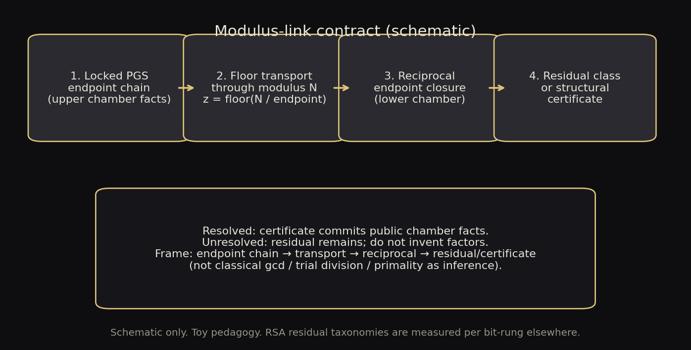

editorial
Modulus-link endpoint-chain ladder
Editorial schematic of the cryptology contract frame: locked endpoint chain, floor transport, reciprocal closure, residual or certificate. Not a solved factorization claim and not a measured residual dashboard.

- Regime
- schematic pedagogy only
- Claim language
- weak
- Reproduce
visualizations/library/.venv/bin/python visualizations/library/entries/endpoint-chain-ladder/demo.py- Chapter refs
research/06-cryptology-rsa/AGENTS.md
- Tags
Observable object
Public modulus-linked work is not drawn as a pile of candidate factors. It is drawn as a chain of chamber facts: an upper locked endpoint structure, a floor transport through the modulus, a reciprocal lower endpoint condition, then either a structural certificate or an explicit residual.
Mechanism
locked PGS endpoint chain
-> floor transport through modulus
-> reciprocal endpoint closure
-> modulus-link residual
-> structural certificate or unresolved stateProject terms
- Endpoint chain: ordered chamber boundary facts carried across transport.
- Residual: what remains when closure does not finish.
- Structural certificate: committed public chamber facts after closure.
Status and limits
- Status: editorial schematic of the required cryptology contract frame. Residual outcomes on named rungs are separate measured or unresolved reports.
- Does not claim RSA is solved.
- Classical
gcd, trial division, and primality APIs are not the inference path on this figure.